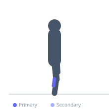
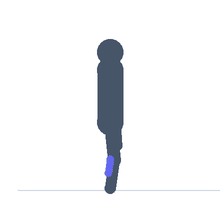

Exercise guide / Wall Calf Stretch
Wall Calf Stretch
The wall calf stretch uses a wall for support and targets the gastrocnemius with the knee straight and the soleus with the knee bent. With the knee straight, the gastrocnemius — which crosses the knee — is placed on maximal tension as the heel is pressed toward the floor and the foot dorsiflexed. The bent-knee version specifically isolates the soleus, which does not cross the knee joint.
Primary muscles
gastrocnemius medial
gastrocnemius lateral
Secondary muscles
soleus
Equipment
No Equipment (Bodyweight)


Starting position
- Stand facing a wall at arm's length. Place both hands on the wall for support.
Setup
- Stand near a solid wall. No equipment needed.
Steps
- Step 1: Place both hands on the wall and step one foot back approximately 60–90 cm.
- Step 2: Keep the rear knee straight and press the rear heel firmly into the floor.
- Step 3: Lean gently into the wall by bending the front knee, dorsiflexing the rear ankle.
- Step 4: Hold until a stretch is felt in the calf of the rear leg — 30–60 seconds.
- Step 5: To target the soleus, slightly bend the rear knee while keeping the heel down. Hold again.
Coaching cues
- Press the heel through the floor — the stretch comes from the floor pushing back
- Keep the rear foot pointing straight ahead
- Bend the rear knee slightly to shift the stretch from the gastrocnemius to the soleus
Breathing
- Breathe naturally and steadily throughout the hold.
Range of motion
- Lean into the wall until a noticeable but comfortable calf stretch is felt. The rear heel must remain on the floor.
Tempo
- 30–60 seconds straight-leg for gastrocnemius, 30–60 seconds bent-knee for soleus. 2–3 rounds.
Common mistakes
- Lifting the heel of the rear foot off the floor, which eliminates the stretch
- Rotating the rear foot outward rather than keeping it straight
- Not stepping back far enough to feel the stretch
Safety
- Avoid this stretch during acute Achilles tendon injury — consult a clinician first
- Ensure the wall can support body weight without slipping
Training
- mobility: 2–3 reps
- mobility: 1–2 sets
- Rest: {'mobility': 10}